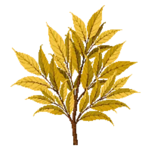

Aucuba 'Gold Dust'
Aucuba japonica 'Gold Dust'

Aucuba 'Gold Dust' is a shrub for structure, suited to shade and partial shade and clay or loam, flowering Mar, Apr.
| Type | Shrub |
|---|---|
| Mature height | 180 cm |
| Spread | 150 cm |
| Aspect | shade and partial shade |
| Foliage | Evergreen |
| Hardiness | USDA 7a-10b |
| Pollinator-friendly | No |
| Pet-safe | No |
Where to use it in a border
At around 180 cm, it sits best toward the back of a border, or on its own as a focal point with room around it. Give it about 150 cm of room to spread. It is hardy across USDA zones 7a to 10b, so check it suits your area before planting.
It appears in our lists of shade, clay soil, evergreen plants.
Flowering through the year
Worth knowing
- Evergreen, so it keeps the border furnished through winter.
- It tolerates a shaded, north-facing spot.
- Not recorded as pet-safe; site it away from pets that graze if that matters to you.
Good companions
Plants that share its conditions and style, chosen to complement its place in the border:
- Coral Bells 'Caramel'to edge in front
- Alumroot 'Palace Purple'to edge in front
- Appalachian Sedgeto edge in front
- Astilbe 'Visions'to edge in front
- Azalea 'Girard's Fuchsia'to edge in front
- Azalea 'Karen'to edge in front
Garden styles
Foundation planting Modern Shade cottage Woodland
See Aucuba 'Gold Dust' set in a full border, with spacing and companions worked out for your own conditions, in Border Builder.
Sources
Bloom timing and hardiness drawn from:
- NC State Extension (plants.ces.ncsu.edu, 2026-05)
- MoBot Plant Finder (missouribotanicalgarden.org, 2026-05)